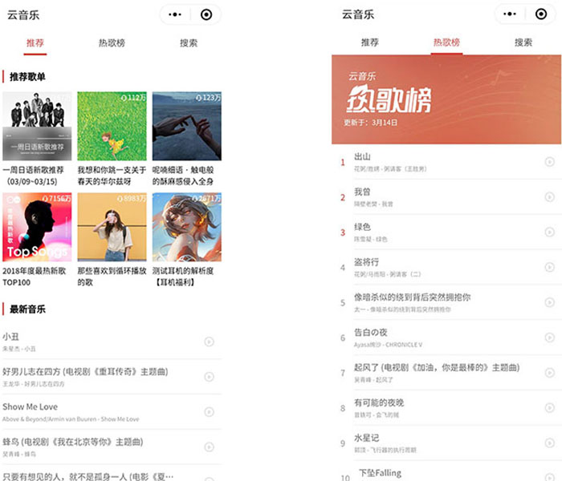
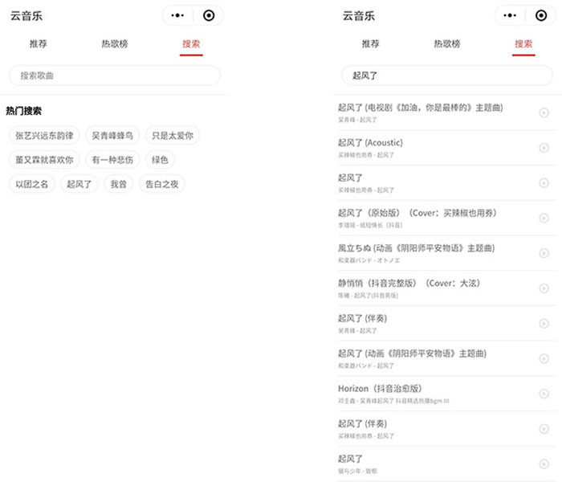
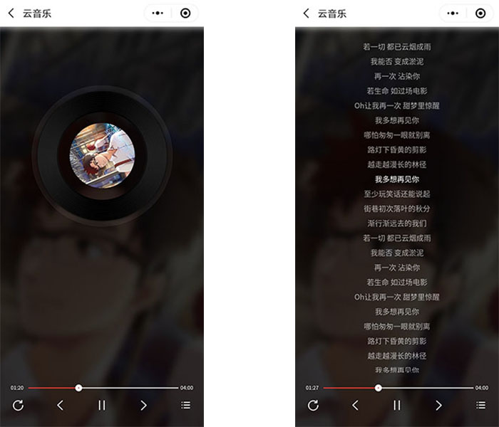

一个微信小程序版的网易云音乐播放器练习demo
Github地址
主要功能
- 推荐音乐
- 云音乐热歌榜
- 搜索
- 歌曲播放页面
- 歌词滚动
- 播放进度条
- 点击跳转进度
- 拖动跳转进度
搭建过程记录
还是用mpvue来初始化，vue的写法，比较顺手。
1
2
3
4
5
vue init mpvue/mpvue-quickstart mp-music
cd mp-music
npm installHTTP请求，用的flyio。
相关的API，使用的是大佬整理维护的Nodejs版本，戳Github可查看，自己简单部署了一下，Nginx配置如下：
1
2
3
4
5
6
7
8
9
10
11
12
13
14
15
16
17
18
19
20
21
22
23
24
25
26
server{
listen 80;
server_name example.com;
rewrite ^(.*) https://$host$1 permanent;
}
server {
listen 443 ssl;
server_name example.com;
ssl on;
ssl_certificate example.com.pem;
ssl_certificate_key example.com.key;
ssl_session_cache shared:SSL:1m;
ssl_session_timeout 5m;
location / {
proxy_pass http://127.0.0.1:3000;
}
ssl_ciphers HIGH:!aNULL:!MD5;
ssl_prefer_server_ciphers on;
}安装stylus，添加loader：
1
2
3
4
5
6
7
8
npm install stylus stylus-loader --save-dev
// webpack.base.conf.js
{
test: /\.styl$/,
loader: ['url-loader', 'css-loader', 'stylus-loader'],
}app.json中定义tabBar；
使用微信小程序的API，创建音频实例：
1
2
wx.createInnerAudioContext()歌词解析：用了个开源的lyric-parser，但解析网易云音乐歌词存在bug，可以参考issues中讨论的解决方式，最后又自行增加了一个destroy()方法在离开页面时销毁实例：
1
2
"lyric-parser": "git+https://github.com/AlisaLiCn/lyric-parser.git",进度跳转：
1
2
3
4
5
6
// 音频跳转，单位秒，小数点需要保留在3位以内，不然好像不生效
innerAudioContext.seek(time)
// 歌词跳转，单位毫秒
lyric.seek(time * 1000)
构建命令
1 |
|
预览
构建完成后，使用微信开发者工具打开，也可使用手机扫码预览
截图预览：



Github地址